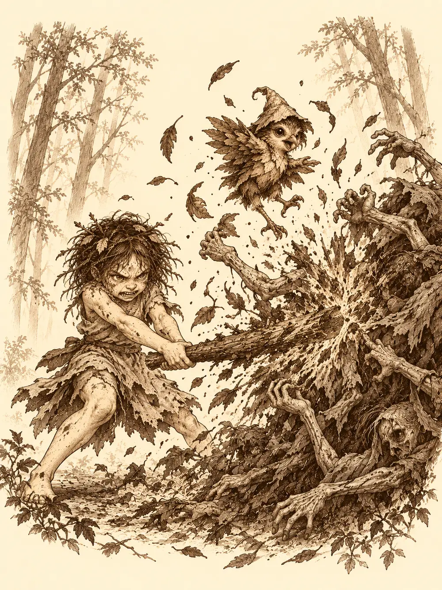

Capítulo 151
Replantar el bosque
Libro IX · Mareas y muertos
Durante días, Arwen volvió a Jigoku no Mori cada mañana. Se arrodillaba en el corredor muerto que había dejado el nigromante, hundía las manos en la tierra gris y le pedía a la hierba que creciera, y la hierba crecía. Brotaban tallos, se abrían hojas, algún árbol joven estiraba las ramas hacia la luz. A la mañana siguiente estaba todo marchito otra vez, y el bosque seguía gritando de dolor con aquella voz sorda que solo ella y Channi oían.
Entre una cosa y otra había aprendido a vender. Las hojas, las plumas y las plantas raras que le regalaban sus amigos del bosque las cambiaba en las tiendas de los alquimistas por monedas, y con las monedas compraba comida, que era lo único para lo que el dinero le parecía útil. Una criatura del país de las hadas la ayudaba a regatear. Mientras tanto, el resto de los cazadores seguía con lo suyo. Jin había empezado a entrenar a los reclutas en el sur y a mediar entre humanos y tritones, y sus ideas daban ya fruto. Banzo aprendía a repartir a los cazadores por parejas y a decidir quién iba adónde. Channi les contó, muy contenta, que había conocido a un amigo de Arwen, un joven pálido que la había dejado dormirse en su regazo.
"Las plantas que hago crecer se vuelven a poner malas al día siguiente", les explicó Arwen. "El bosque grita. Algo no está bien".
Jin y Banzo se miraron y decidieron ir con ellas.
Antes de salir, Arwen se empeñó en conseguir un palo. No uno cualquiera, sino la rama de un árbol concreto, más alta que ella, a la que no llegaba saltando. Se colgó de ella con los dientes hasta que Jin, después de un trago de algo fuerte, tiró de la niña y de la rama a la vez y la rama se partió. Arwen se quedó con un palo más grande que ella en la boca y una felicidad que le cabía en todo el cuerpo.
Cruzaron el portal hasta la base de Ukio, donde se apiñaban los refugiados y el inugami constructor intentaba poner un poco de orden, y salieron por la trampilla al pueblo. Arwen arrastró a Banzo de puerta en puerta.
"Mira, mira, a estos les pides que te traigan cosas y te las traen".
Eran los shinobi del pueblo, a los que se podía mandar de encargo. Habían vuelto tres. Uno traía una herramienta para un oficio. A otro lo habían capturado, y quien lo tenía pedía cincuenta monedas por soltarlo. El tercero había muerto. Nadie pagó el rescate.
Por la calle, Banzo prestó oído a los vecinos. Hablaban del bosque en voz baja, con ese miedo que no se dice en alto: que alguien había entrado y no había vuelto igual, que ellos no pensaban ir más. En la tienda de una mujer que fumaba en pipa había una esfera enorme que escupía monedas si uno le echaba otras dentro, y Arwen se pasó un buen rato echándole y recogiendo; Banzo no terminó de entender para qué servía aquello. El pescadero, al verlos, se quejó de que llevaban semanas sin pasarse y tenía que tirar el pescado que le sobraba. Banzo examinó un pescado con las dos manos, le abrió la boca, le miró el ojo, y dio su aprobación.
En la taberna, Kitaro les sirvió de comer y les reprochó, con más cariño que enfado, que ya nunca pasaban a verlo. Jin le dijo que echaba de menos su comida, y Kitaro le dio un golpecito en el hombro antes de volver a la cocina.
"Sin ti no existirían ni los cazadores", le dijo Jin.
Arwen se sentó a la mesa y empezó a golpearla con los puños y a pedir comida, y la comió a dos manos, con los dedos sucios de barro, masticando entre crujidos de arena. Banzo se acercó a la mesa de los viejos cazadores del pueblo y le dio a Lealín unas cuentas, un recuerdo de Sun Gukon, que según él seguía peregrinando. Luego les preguntó si habían visto algo raro en el bosque, y Zogia se encogió en su rincón.
"Le pilló lo del gigante", le explicó alguien. "Todavía no se le ha pasado".
Arwen se le acercó. Llevaba días viéndola igual de triste, y le puso un anillo en la mano.
"Toma. Esto es para ti, que siempre te veo triste. No tengas miedo de los bosques. Los bosques no son malos. Lo que es malo es lo que va contra la naturaleza y contra la vida".
Zogia se puso el anillo, se quedó mirándolo un momento y luego se volvió y abrazó a la niña. De su pecho salió un ronroneo de gato, y Arwen le contestó con otro.
Jin, mientras, le hablaba a Banzo de Kitaro con la voz de un viejo que cuenta historias que nadie más recuerda. La primera misión de los cazadores había salido de aquella taberna. Aquel hombre los había ayudado a reformar su primera base. Si un día los cazadores salvaban Kuroto, dijo, no sería por un solo héroe, sino por gente como él. Banzo lo escuchó con curiosidad y luego volvió a lo que les ocupaba.
"Vosotras dos dirigís esta misión", les dijo a Arwen y a Channi. "Cuento con vosotras".
Arwen le tocó la frente a cada uno con la mano encendida de oro y les dejó dentro una certeza tranquila, la de ver venir los golpes.
El bosque estaba más oscuro que nunca. La niebla se pegaba a la piel y, a medida que entraban, Arwen se iba encogiendo y callándose.
"Están mal. Demasiado silencio. Demasiados gritos".
Arwen y Channi oyeron algo antes que nadie, y Banzo vio una silueta oscura, borrosa entre la niebla, que se acercaba agachada hacia ellos. No esperó. Lanzó el arpón para frenarla, y el arpón se clavó en el suelo justo delante de la figura, que dio un respingo y se miró un pie: tenía un corte. Arwen se plantó a cuatro patas delante de Channi con el pelo erizado como un gato y gruñó.
Era un hombre emplumado, con olor a plumas y a tabaco, que los señaló con el dedo, ofendido.
"¿Por qué vosotros atacar a mí? Yo solo ir andando, vigilando".
"Lo siento", dijo Banzo. "En medio del bosque más peligroso de Kuroto, uno no espera visitas".
"¿Qué es Kuroto?".
"Esto. Todo esto es Kuroto".
"Ah. Y yo llamarme Sombra del Desierto. Si esto no ser desierto, tendré que llamarme Sombra de Kuroto".
Les contó, con su manera rota de hablar, que había llegado allí por culpa de una luz. Iba con una tal Azul y con un hombre al que llamaba Gr, y de repente una luz lo había separado de ellos y lo había dejado en aquel lugar. Antes de eso, dijo, había visto a una pistolera malvada, de piel oscura y pelo blanco, que disparaba balas por el dedo. Los cazadores se miraron. Alguno creyó reconocer a quién se refería, pero nadie pudo estar seguro. Sombra quería volver a casa, y si ellos lo ayudaban, él los ayudaría. Les ofreció humo de su pipa. Llevaba dos días en el bosque. Algunos bichos habían intentado morderle el culo, pero él corría más.

Channi se arrodilló y puso las manos en la tierra. Las plumas de la cabeza se le movieron como olas, primero despacio, luego más deprisa, reflejando el dolor de las raíces, y de golpe se le aplastaron contra el cráneo.
"Duele mucho. Duele, pío. Ya sé dónde".
Por el camino que había encontrado se les acercó, tropezando, una criatura pequeña y redonda que se detuvo al verlos y retrocedió con los ojos muy abiertos. Era un kappa. Tenía una mano con una herida muy fea.
"Tranquilo, pío", le dijo Channi. "Venimos a ayudar".
Banzo le aconsejó que se acercara despacio, sin asustarlo. Channi le cogió la mano con mucho cuidado y le cantó. La herida se cerró mientras cantaba. Arwen le habló en silvano, la lengua de los seres del bosque.
"¿Quién te ha hecho daño?".
"Cosas malas. Cosas que salen de debajo de la tierra. Cosas que no deberían volver. Huelen a muerte. Familia muerta. Amigos muertos". El kappa negó con la cabeza. "Yo no vuelvo ahí".
"No hace falta que vuelvas. Solo dime dónde".
Señaló el mismo camino que había encontrado Channi y se fue. Arwen sacó unas bayas y les preparó a todos un pequeño banquete que les llenó el cuerpo de fuerzas y les quitó el miedo.
Más adelante encontraron los cuerpos. Eran yokai del bosque, varios, y estaban medio deshechos: a uno le faltaba la mitad de la cara, a otro se le veía el hueso de todo el costado, consumido por una magia que derretía la carne como los peores conjuros de Gelbreak. Habían sufrido. Arwen puso cara de ir a llorar. Arrastró los cuerpos uno por uno y los juntó delante de ella, y les tocó la frente. De cada uno salió una luz pequeña que subió hacia las copas y se perdió entre ellas, camino de otra vida. Los cuerpos se quedaron allí, vacíos, apagados.
Sombra del Desierto los embadurnó a todos de barro para que se confundieran con el bosque. Jin y Banzo avanzaron delante mientras las demás se escondían detrás.
El suelo se movió bajo los pies de Jin. Salieron manos. Muchas manos, de la tierra, que le agarraron los tobillos y lo golpearon antes de que pudiera reaccionar. A Banzo no lo pillaron por sorpresa, nunca lo pillaban; entró en furia en cuanto sintió el primer temblor. Detrás de las manos se levantó una masa enorme de muertos, una cosa hecha de trozos de tanuki, de trozos de kappa, de trozos de gente, de trozos de todo lo que alguna vez había vivido en aquel bosque. Después salieron zombis verdosos y pestilentes, que quemaban la piel con solo tocarla.
Y luego salió algo peor. Era un esqueleto cubierto de hongos, de ramas y de raíces, como si el bosque le hubiera crecido encima, y absorbía la naturaleza a su alrededor como una esponja. Levantó la mano, el cielo se tiñó de rojo y empezó a llover fuego. A su alrededor había algo invisible que empujaba hacia fuera a todo lo que estaba vivo y no dejaba acercarse a nadie.
Sombra salió de su escondite disparando flechas. Jin desenvainó y fue tumbando zombis, que se levantaban una vez y luego ya no. Channi llamó a unas arañas gigantes y les pidió que se pusieran delante de sus amigos. Arwen sacó del país de las hadas un conejo que se volvía invisible y daba unos golpes ridículos pero muy molestos, y plantó un tótem que derramaba curación sobre todos los que se quedaban cerca. Banzo se llenó la boca de aguardiente y lo escupió contra los muertos, y con el aguardiente salieron sus espíritus, y el zombi que tenía delante se deshizo allí mismo.
Un rayo negro, de muerte, alcanzó a Arwen. La niña sintió que algo se le iba del cuerpo y no volvía. Siguió curando. Banzo soltó a sus espíritus contra los enemigos, todos a la vez, y se quedó sin furia, vacío, sabiendo que no podría volver a llamarla en un buen rato.
Arwen silbó a su cuervo y de su boca salió Chilia, que miró alrededor, vio un montón de criaturas, no distinguió muy bien cuáles eran de los suyos y empezó a repartir golpes a quien le pareció. Luego vio el conejo y se fue detrás de él. Arwen le gritó que ese era amigo.
Entonces la masa de muertos se tragó a Channi. Arwen la vio desaparecer dentro de aquella cosa, entre brazos y piernas que no eran de nadie, y corrió hacia ella con el palo nuevo en las manos y golpeó, y golpeó, y golpeó, hasta que la masa reventó y Channi cayó al suelo cubierta de restos, viva. Los demás terminaron con lo que quedaba. Ninguno de los cazadores murió.
Arwen se acercó a la criatura de raíces y le apartó las hojas y las ramas con las manos. Debajo había un kodama, un espíritu pequeño de árbol, muerto, destrozado. Le faltaba media boca y tenía un ojo deformado, como si algo se le hubiera metido dentro y lo hubiera convertido en aquella cosa horrible. En la piel llevaba una marca, como un tatuaje.
Arwen la reconoció. No sabía muy bien de dónde, quizá de algo que le contaron sus padres, pero la reconoció: era una de las marcas de los dragones, las que aparecen en ciertas familias y pasan de generación en generación, cada una con su significado. Aquella era la Marca de la Muerte.
Jin también la había visto en relatos. Las marcas de dragón eran linajes; había casas enteras que las llevaban. Y sabía algo más.
"Los que tenían esta marca están todos muertos. El linaje de la Marca de la Muerte se considera extinto. No debería haber nadie que la llevara". Miró el kodama. "Esto es muy serio. Tenemos que averiguar qué hay detrás".
Nadie supo decir quién había hecho aquello ni por qué. Arwen le tocó la frente al kodama, y una luz pequeña salió de él y subió entre las ramas. Luego curó a Jin y a Banzo hasta dejarlos sin un rasguño, aunque a ella le quedaran ya pocas fuerzas.
"Arwen se queda", anunció. "No me gusta lo que está pasando aquí. Dormiré en el palacio cuando vuelva".
Jin le dejó a Ignacio, el búho azul, para que pudieran hablar a distancia.
"Quédate con ella. Si pasa algo, avísame".
El búho asintió. Arwen miró el rastro de cadáveres, que se adentraba en el bosque, hacia lo más profundo, y echó a correr detrás de él a cuatro patas, con el palo en la boca y el búho volando sobre su cabeza, hasta que la niebla se los tragó a los dos.
La noche de la mascarada, ante la puerta de la base, Alister le había dicho a Serafina que ninguna fiesta le interesaba sin ella. Ella le había tomado la mano y había admitido que se sentía a gusto con él y atraída, sin saber explicar por qué. Él la llamó su Flor del Mar. Serafina, nerviosa, le propuso irse a algún sitio donde pudieran estar solos, y él le ofreció el brazo y le dijo que conocía un lugar que esperaba que estuviera a su altura. Ella le contestó que le bastaba con su compañía. Se alejaron bajo la luna hacia los barrios ricos, del brazo, y no volvieron a la mansión.